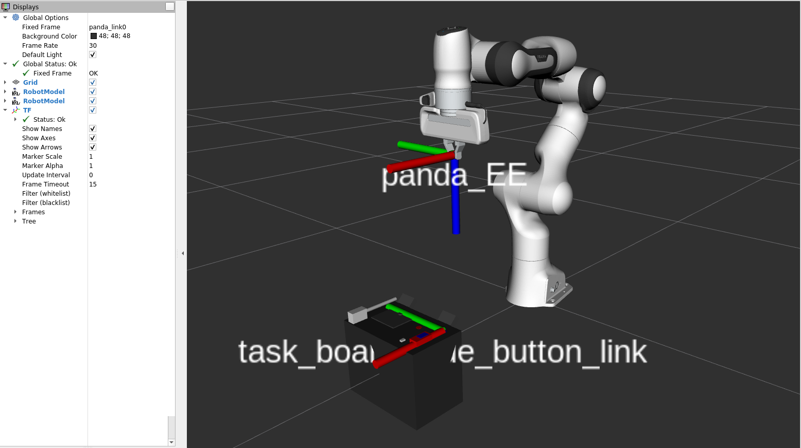
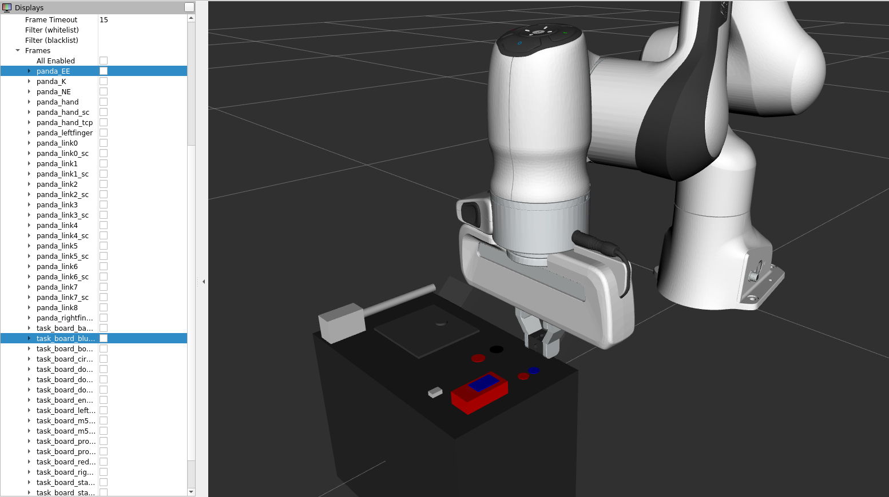

Tâche pour le bouton bleu
Objectifs
Etapes principales pour la réalisation de la tâche
Positionner l’effecteur final au-dessus du bouton bleu,
Ajuster la raideur du bras de robot Panda
Descendre l’effecteur final jusqu’à au maximum 1mm de profondeur après contact avec le bouton bleu
Positionnement de l’effecteur final au niveau du bouton bleu
Utilisation de ROS
$ roslaunch trajectory franka_positions.launch
Les différents noeuds lancés par le
launchfile:
Noeud lancé à partir d’un script “positions.py”, contenant les méthodes pour atteindre les positions de base (“home” et “home2”) et les positions du bouton bleu, du slider et de la trappe,
Noeud lancé à partir d’un script “trappes.py”, pour l’ouverture de la trappe selon une trajectoire circulaire.
Affichage du repère ou de la TF de l’effecteur final (“panda_EE”) et du bouton bleu (“task_board_blue_button”) :
Alignement des deux TFs :
|

|
|---|
Fig. 44 TFs de l’effecteur final et du bouton bleu.
|

|
|---|
Fig. 45 TF de l’effecteur placé au-dessus de la TF du bouton bleu.
Méthode “run” de la classe “position” permettant de déplacer l’effecteur final en fonction des saisies dans le terminal
def run(self):
while not rospy.is_shutdown():
position = input("Position : ")
if position in self.keys.keys():
char=self.keys[position]
if char == 'home2':
self.panda.home(0.25)
elif char == 'home':
self.panda.home(0.5)
self.localization()
elif char == "quit": # STOP
rospy.signal_shutdown("User initiated shutdown")
elif char == 'test':
# pose=self.panda.get_pose_EE()
# rospy.loginfo(pose)
pose = PoseStamped ()
pose.pose.position.x = 0
pose.pose.position.y = 0.2
pose.pose.position.x = 0
rospy.loginfo(pose)
self.panda.go_to_pose_EE('panda_EE',pose,False)
elif char =='circle':
# theta goes from 0 to 2pi
theta = np.linspace(0, 2*np.pi, 2000)
# the radius of the circle
r = 0.1
# compute x1 and x2
x = r*np.cos(theta) + self.panda.curr_pos[0]
y = r*np.sin(theta) + self.panda.curr_pos[1]
# z = np.linspace(self.panda.curr_pos, self.panda.curr_pos, 100)
z = np.full((2000), self.panda.curr_pos[2])
self.panda.set_stiffness(4000, 4000, 4000, 50, 50, 50, 10)
self.panda.play_trajectory(x, y, z)
elif char == 'door':
self.door()
elif char == 'connector':
self.connector()
elif char == 'wire':
self.wire()
##########################################################################
####################### Tâche du bouton bleu #############################
elif char == 'blue_button':
self.panda.move_gripper(0.0001)
self.panda.go_to_frame('task_board_blue_button_link', 'tool', False, 0.1)
self.panda.go_to_frame('task_board_blue_button_link', 'tool', False)
##########################################################################
##########################################################################
else:
self.panda.go_to_frame(char[0], 'tool', char[1], 0.1)
self.panda.offset_compensator(10)
self.panda.go_to_frame(char[0], 'tool', char[1])
self.rate.sleep()
Dans cette méthode run du script “positions.py”, on peut déplacer le robot en fonction de toutes les tâches, à partir des TFs définies au niveau de la task-board (définies physiquement dans son URDF). Elle contient une condition permettant au bras de robot Panda d’aller appuyer sur le bouton bleu lorsqu’on saisit blue_button dans le terminal. La réalisation de la tâche en question suit ces étapes suivantes :
Fermeture des pinces au niveau de l’effecteur final (avec la méthode “
move_gripper()” qui permet de contrôler la distance d’ouverture des pinces en fonction d’un argument qui s’exprime en mètre),Ensuite la TF “
tool” va se positionner au niveau de la TF du bouton bleu (task_board_blue_button), avec une hauteur de 0.1m,Et une fois les deux TFS
toolettask_board_blue_buttonalignées, l’effecteur finale va descendre appuyer au niveau du bouton, en sachant qu’une elasticité a été définie au niveau de l’effecteur finale pour qu’il évite d’endommager la boîte ou le bouton en appuyant trop fort dessus (donc ici on a un contrôle en position mais aussi en impédance).
Problèmes rencontrées
Solutions expérimentées
Vidéo de démonstration de la tâche
Ci-dessous, vous aviez à disposition la vidéo d’exécution de la tâche du bouton bleu par le bras de robot Panda Franka Emika :
|
|
|
|---|
|
|
|
|---|
Fig. 48 Simulation de la tâche du bouton bleu avec le robot réel, vu de plus près